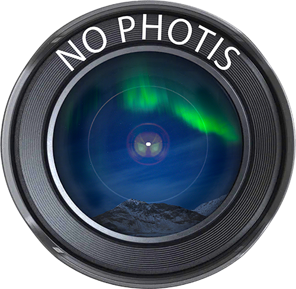

Amb més de 30 anys d'experiència com a hobby professional, ubicat a Barcelona, sota el nom de No Photis hi ha un projecte fotogràfic nascut de la passió per capturar instants.
With more than 30 years of experience as a professional-level hobby, based in Barcelona, behind the name No Photis there is a photography project born from a passion for capturing moments.
Un recorregut llarg que es mou entre tres mirades ben diferents. D'una banda, l'exterior: paisatges, ciutat, viatges, moments quotidians i petits fragments d'història capturats amb llum natural. De l'altra, el treball d'estudi amb No Photis Studio, centrat en el retrat i la fotografia 'beauty' (bellesa i moda), tant en color com en blanc i negre, sempre buscant la imatge que transmet alguna cosa més enllà de la pose. I finalment, els detalls: cel, vistes aèries i macro, l'espai on la mirada s'acosta o s'enlaira per trobar detalls que normalment passen desapercebuts.
A long journey that moves between three quite different perspectives. On one hand, the outdoors: landscapes, city, travel, everyday moments and small fragments of history captured in natural light. On the other, studio work with No Photis Studio, focused on portrait and 'beauty' photography (beauty and fashion), both in color and black and white, always searching for the image that conveys something beyond the pose. And finally, the details: sky, aerial views and macro, the space where the gaze draws close or takes flight to find details that usually go unnoticed.
Tres registres, una mateixa manera d'entendre la fotografia: com un exercici d'atenció, de composició i de llum, sigui davant d'un paisatge, d'una persona o d'un detall minúscul. Tres dècades més tard, la mateixa curiositat de sempre: la de qui busca, encara, l'instant just.
Three registers, one same way of understanding photography: as an exercise in attention, composition and light, whether facing a landscape, a person or a tiny detail. Three decades later, the same curiosity as ever: that of someone still searching for the right moment.
Si vols conèixer el treball més recent o parlar d'un projecte, la millor manera de contactar és a través d'Instagram (@no.photis).
If you want to see the most recent work or talk about a project, the best way to get in touch is through Instagram (@no.photis).
Totes les fotografies de models publicades en aquest lloc web s'han obtingut i publicat amb l'acord exprés i informat de la model, incloent l'autorització per a la seva difusió pública amb finalitats artístiques i promocionals. Si ets la model d'alguna de les fotografies i vols exercir el teu dret de retirada, contacta'ns via Instagram.
All photographs of models published on this website have been obtained and published with the express and informed consent of the model, including authorization for their public disclosure for artistic and promotional purposes. If you are the model in one of these photographs and wish to exercise your right of withdrawal, please contact us via Instagram.
@no.photis · @no.photis.studio
©2026 No Photis. All rights reserved.